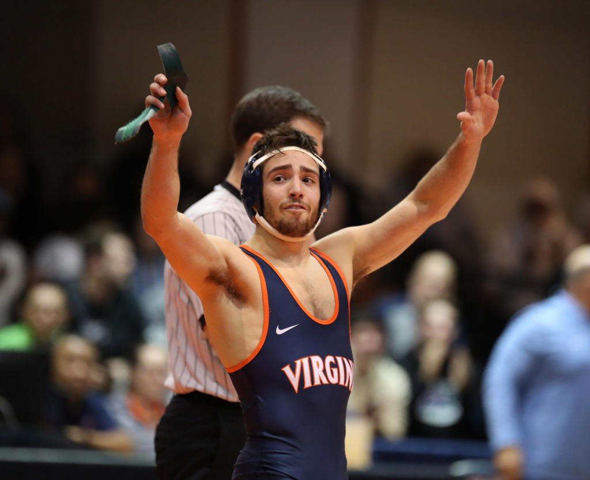

By Chad Whych | 01/15/2020

After returning from a brief winter break, No. 22 wrestling placed second at the 40th edition of the Virginia Duals. Held in the Hampton Coliseum, the Duals are one of the most coveted tournaments in the state of Virginia for both high school and collegiate level wrestlers. Notably, this marks the second year in a row that Virginia finished as the runner up at the Virginia Duals.
The Cavaliers (5-2, 0-0 ACC) came into the tournament as the first overall seeded team, and started off the weekend with a win over Kent State. Virginia soundly defeated the Golden Eagles (5-7, 1-2 MAC) 23-12, winning 6 of their 10 total matches.
Saturday morning the Cavaliers advanced onto the semi-finals to face Old Dominion. Although starting off the Dual with a 13-0 lead, the Monarchs (3-7, 1-1 MAC) soon caught up, winning three of the next four. Despite the comeback, the Cavaliers would persevere, ultimately defeating the Monarchs by a margin of 23-9.
To wrap up the day, the Cavaliers clashed with Rider in the championship matchup. Both teams came out explosive, splitting the first 3 matches by decision. Nevertheless, the Broncos (6-2, 2-1 MAC) would go on to win the next four matches, surging ahead of the Cavaliers 20-6.
However, at the 197 pound weight class, No. 9 junior Jay Aiello turned the tide for the Cavaliers with an impressive victory over fellow ranked opponent No. 10 junior Ethan Laird. Aiello’s strong start to the season should prove to push him ahead in the NCAA rankings.
To finish off the match, sophomore Quinn Miller was called on to face Rider senior Ryan Cloud. Miller was able to wrestle his way to a narrow 1-0 victory, but this was to no avail as the Cavaliers fell 20-12.
Overall, three Cavalier wrestlers finished the weekend undefeated — Aiello, No. 18 at 133 lbs. junior Louie Hayes, and 149 lbs. junior Michael Murphy.
Virginia now looks to bounce back against Tennessee-Chattanooga and Virginia Military Institute in home meets this weekend. Winning against these two programs will surely be a well needed confidence booster for the team before beginning ACC play.